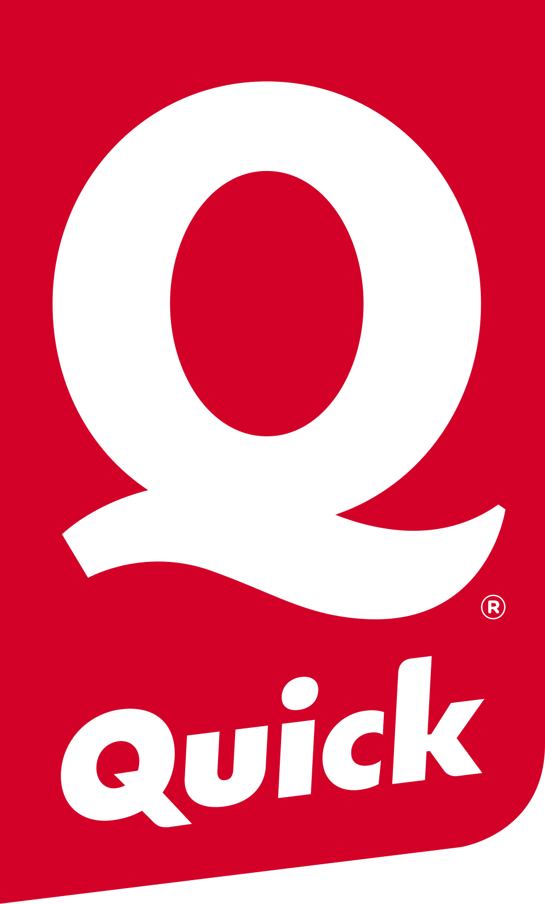

Projets réalisés dans le cadre de mes expériences en entreprise.

Migration d'un VPN SSL vers un VPN IPsec pour sécuriser les accès distants de 40 collaborateurs du siège Quick France.
Suivi et gestion du parc informatique du siège Quick France — ordinateurs et téléphones — avec statuts, modèles et numéros de série.
Mise en place d'une procédure de cession du matériel usagé aux collaborateurs avec contrats de vente officiels.
Rédaction d'une procédure standardisée pour la configuration et la remise des nouveaux postes aux collaborateurs.
Procédure de création et attribution de badges utilisateurs sur le système de gestion des copieurs Optimidoc.
Projets personnels développant mes compétences techniques.
Simulation d'une infrastructure réseau d'entreprise avec Active Directory, segmentation VLAN et firewall pfSense pour une enseigne de restauration rapide.
Simulation Cisco Packet Tracer reproduisant l'infrastructure réseau avec VLANs, routage inter-VLAN et haute disponibilité.
Configuration et sécurisation du firewall pfSense avec règles de filtrage et politique de sécurité.
Projets techniques réalisés au cours de la formation BTS SIO.
Mise en place de GLPI avec synchronisation Active Directory via LDAP, import de 29 utilisateurs et gestion de tickets d'incident.
Déploiement d'un contrôleur de domaine Windows Server avec Active Directory, DNS et DHCP pour StadiumCompany.
Segmentation du réseau StadiumCompany en VLANs sur équipements Cisco pour isoler les services et améliorer la sécurité.
Mise en place d'un EtherChannel pour doubler la bande passante et HSRP pour assurer la redondance des routeurs.
Configuration de Nagios XI pour superviser les équipements de l'infrastructure StadiumCompany avec ajout manuel d'hôtes et vérification des services.